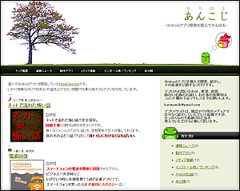
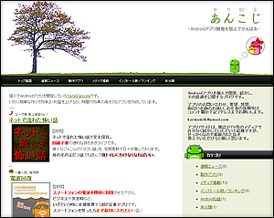
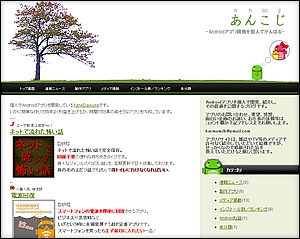
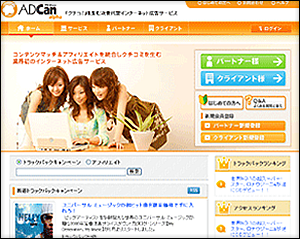
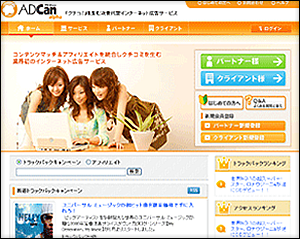

Android Apps

怖い話

電波回復

バッテロイド

ゴキバリア

Modoki

泣き止み

SMA*POTO
累計売上350万を達成。特に「電波回復」は効率的な開発で大きな収益を上げ、多数のメディアで話題となりました。
関連資料：
 


Media & Interviews

週刊SPA! インタビュー掲載
「金持ち副業ランキング」にて6位。個人開発者として月収200万円レベルの実績が特集されました。

ASCII.jp「顔の見えるインターネット」
ココローグ管理人の成功戦略として取材。当時のお正月動画連載記事なども執筆していました。


TV番組「バズトーク」出演
ココローグがエンタメ系ブログとして紹介され、メディアへの露出が加速しました。
Web Activity

アルファブログ「ココローグ」運営
月間100万PV超。ウイルスバスター記事コンテスト優秀賞などの実績があります。
 


「YouTube大辞典」企画・ノミネート
ネトランの書籍化企画にてノミネート。ネットのトレンドを先読みした企画を多数立案しました。
Other Activities

伊藤園 お〜いお茶新俳句大賞
「あれもしたいこれもしたいぞ大冬木」優秀賞を受賞し、全国のお茶の缶に掲載されました。

3校連携「駆け込み演劇祭」企画長
近畿大・大阪大・大工大の合同演劇祭を主催。当時から組織運営や企画に携わっていました。

SEGA バーチャル空間サービス参画
アルファブロガーとして公式トライアル等に参加。新しいWebの形を常に模索していました。